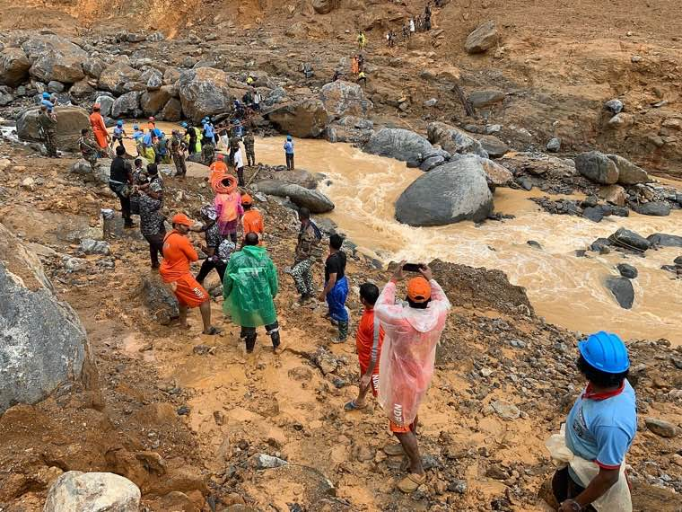
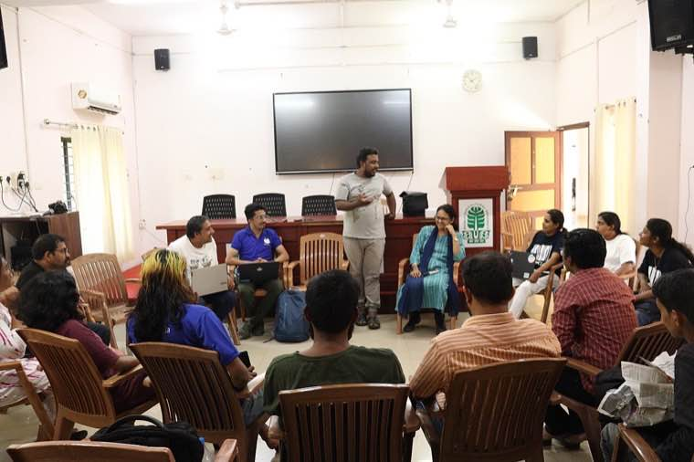
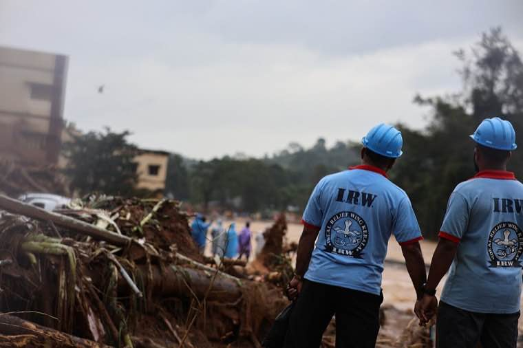
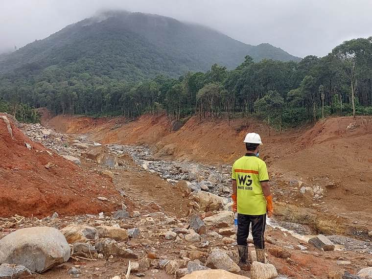

The story in brief
In the August 2018 floods — the worst Kerala had seen in a century — a small civic-tech team and the state's disaster authority built a single platform in 72 hours that let trapped citizens broadcast their location, volunteers sign up, and rescue teams coordinate. It saved lives that would not have been saved otherwise.
When the rain didn't stop and the dams had to be opened, ordinary phones became the only reliable signal. People sent photos of stranded families, fisherfolk drove their boats inland, and pharmacies started ferrying insulin in jeeps.
Kerala Rescue gave that chaos a shape. It collected SOS requests, plotted them on a map for rescue teams, listed verified relief camps, and let volunteers and donors give what was actually needed — not just what felt useful.
What changed for people
- Trapped citizens could be reached by the nearest available rescue team, not just the formal route.
- Relief camps stopped getting twelve truckloads of rice and zero truckloads of sanitary supplies.
- Families separated in the floods reconnected through a simple missing-persons board.
- Months after the floods, the rebuild was tracked transparently through the same portal.
The officer playbook
Overview
Kerala Rescue is a story of how a state's emergency response leaned on the civic-tech community — and how that partnership produced a platform that, in retrospect, was the single most important coordination tool of the 2018 floods.
Built in 72 hours by volunteer engineers in partnership with the Kerala State Disaster Management Authority (KSDMA), the platform handled SOS requests, relief-camp inventories, missing persons, donations and volunteer matching, all in one place.
The deeper lesson is institutional: response speed comes from pre-existing relationships, open APIs, and the political willingness to let civilians inside the command tent — not from procurement after the rain starts.
Challenges
Speed vs. accuracy
Every minute of design discussion was a minute people stayed stranded. The team had to ship MVP features and accept noisy data — then validate continuously.
Source of truth conflicts
Camp inventories, SOS lists, and missing-persons records came from many sources. Deduplication, last-write-wins rules, and a single moderator pool were essential.
Volunteer trust and safety
Untrained volunteers showing up at rescue sites could endanger themselves. Verification, briefing, and matching by skill type were built in.
After the headlines fade
Floodwaters recede. Rebuilding takes years. Keeping the same portal alive for transparent rebuilding required institutional commitment, not just hackathon energy.
What was done
- KSDMA gave the volunteer engineering team a same-day mandate and direct access to district-level officials.
- MVP was shipped in 72 hours, with iterative releases every 6–8 hours during peak operations.
- A 24x7 moderation room manned by IAS/IPS officers and volunteer leads validated SOS requests and routed them.
- Relief camp inventories were updated by camp commandants via SMS-friendly forms — bandwidth was scarce.
- After the response phase, the platform pivoted to Rebuild Kerala dashboards — same database, new lens.
- Source code and learnings were open-sourced to enable other states and disasters to adopt the model.
Technology & systems
- Vanilla JS + Bootstrap front-end (chosen for low-bandwidth tolerance)
- Node.js + PostgreSQL backend, autoscaled on a public cloud provider
- Mapbox + OSM for camp and SOS plotting; offline tile caches for command centres
- Twilio + local telecom partners for SMS-based camp inventory updates
- GitHub-based volunteer engineering with a rotating release manager
- Open APIs for media, NGOs and inter-state agencies to consume
Outcomes
- 14+ lakh citizens evacuated to or sheltered in 5,645 relief camps coordinated through the platform.
- Average SOS dispatch time fell from "unmeasured" to under 20 minutes during peak operations.
- Relief logistics matching reduced spoilage and oversupply of common items by an estimated 40%.
- The platform was reused — with the same core engine — for the 2019 Kerala floods and the early Covid response.
- The civic-tech + KSDMA model became a template adopted by other Indian states and South Asian disaster authorities.
Process flow
1. Activation
KSDMA triggers the platform; volunteer engineering pod is notified via standing roster.
2. Public intake
Citizens, NGOs and officers submit SOS, camp inventories, missing persons and offers of help.
3. Moderation
Central room validates, deduplicates, routes and prioritises every record.
4. Dispatch
Rescue teams (Navy, NDRF, fisherfolk, local police) pulled from the geographically nearest available roster.
5. Camp operations
Camps update inventories; logistics auto-matched to gaps; donors directed to specific needs.
6. Rebuild phase
Same database powers reconstruction dashboards, beneficiary tracking and rebuild progress.
Replication toolkit
- Volunteer engineering pod constitution (with NDA + safety briefing)
- Standing MoU template between disaster authority and civic-tech group
- Source code (open licensed) with deployment runbook
- Moderation desk SOP and roster template
- Camp commandant SMS form and reporting cadence
- Post-response data retention and transparency policy
On the ground




How it unfolded
- Aug 8, 2018
Heavy rain begins
Initial advisories issued; dam levels start rising across the state.
- Aug 14, 2018
Crisis declared
KSDMA activates emergency response; volunteer engineering pod called in.
- Aug 15–17, 2018
Platform built and shipped
Kerala Rescue v0 goes live; first SOS rescues coordinated within 24 hours.
- Aug 18–25, 2018
Peak operations
Over 14 lakh evacuated to camps; rescue, camp and logistics modules all in use.
- Sep 2018 →
Pivot to rebuild
Platform repurposed for Rebuild Kerala dashboards, beneficiary tracking and donor transparency.
- 2019 / 2020
Reactivations
Reused for 2019 floods and the early Covid-19 response in Kerala.
Documents & templates
Request any of these by email — we will share what is available.
Want to adapt Kerala Rescue in your district?
Tell us your context and constraints — we will connect you with the toolkit and the people who built it.